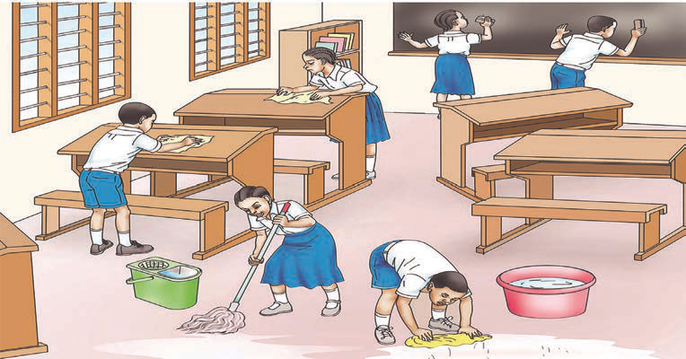

Unapotenda matendo mema kwa mwenzako inaonesha jinsi unavyomjali. Kumjali mtu mwingine ni kumtendea jambo kwa namna ambayo wewe ungependa kutendewa. Matendo ya kuwajali wengine ni kuwapenda, kuwaheshimu na kuwasaidia. Pia, kutoa taarifa kwa walimu, wazazi, walezi au polisi kuhusu vitendo vya ukatili, udhalilishaji au unyanyasaji vinavyofanywa dhidi ya wanafunzi na watoto wengine ni matendo ya kuwajali watu wengine. Kuwajali wengine ni kitendo cha kuwakinga watu wengine dhidi ya mambo yatakayoweza kuwaletea madhara.
Kushirikiana na watu wengine
Matendo ya kushirikiana na watu wengine huonesha kuthamini maadili.
Chunguza picha zifuatazo katika Kielelezo namba 6, kisha fanya zoezi linalofuata.
A.
